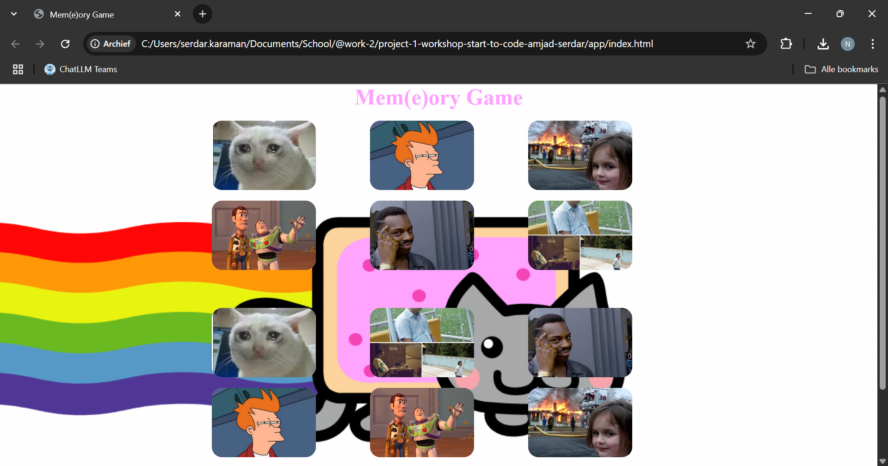
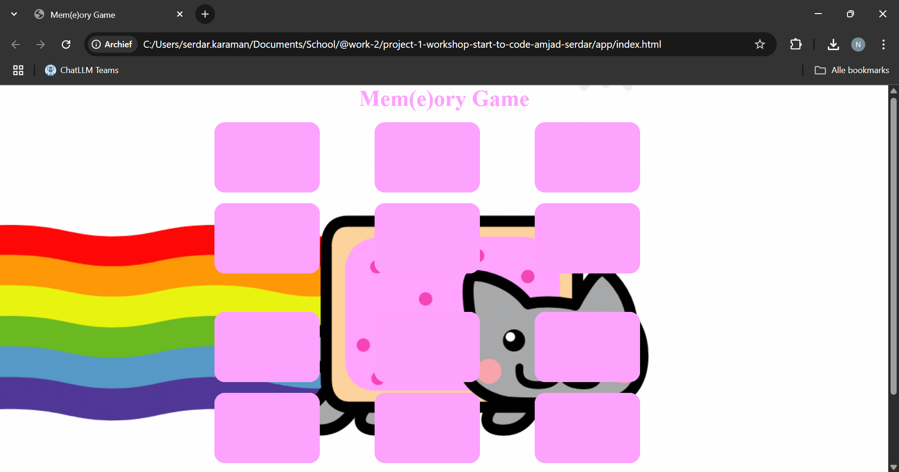

Wat je nodig hebt
- Visual Studio Code (of een andere editor)
- Live Server-extensie
- Een moderne browser
- Een map met meme-afbeeldingen
STAP 1 - Projectstructuur opzetten
Maak een map memory-game aan met deze structuur:
memory-game/
├── css/
│ └── main.css
├── img/
│ └── (meme-afbeeldingen)
├── scripts/
│ └── main.js
└── index.htmlindex.html- HTML-skeletmain.css- stylingmain.js- spellogicaimg/- je memes
STAP 2 - Live Server starten
- Open het project in VS Code.
- Rechtermuis op
index.html→ Open with Live Server. - De pagina ververst automatisch bij elke wijziging.
STAP 3 - HTML-structuur
Kopieer onderstaande markup in index.html:
index.html
<!DOCTYPE html>
<html lang="en">
<head>
<meta charset="UTF-8" />
<meta name="viewport" content="width=device-width, initial-scale=1.0" />
<title>Mem(e)ory Game</title>
<link rel="stylesheet" href="css/main.css" />
</head>
<body>
<header>
<h1>Mem(e)ory Game</h1>
</header>
<main>
<div class="game-board">
<div class="container-1">
<img class="meme-1" src="./img/crying-cat-meme.webp" alt="crying-cat" />
<img class="meme-2" src="./img/futurama.jpg" alt="futurama" />
<img class="meme-3" src="./img/disaster-girl.jpg" alt="disaster-girl" />
<img class="meme-4" src="./img/everywhere.jpg" alt="everywhere" />
<img class="meme-5" src="./img/think.jpg" alt="think" />
<img class="meme-6" src="./img/pablo-escobar.jpg" alt="pablo-escobar" />
</div>
<div class="container-2">
<img class="meme-1" src="./img/crying-cat-meme.webp" alt="crying-cat" />
<img class="meme-2" src="./img/futurama.jpg" alt="futurama" />
<img class="meme-3" src="./img/think.jpg" alt="think" />
<img class="meme-4" src="./img/futurama.jpg" alt="futurama" />
<img class="meme-5" src="./img/everywhere.jpg" alt="everywhere" />
<img class="meme-6" src="./img/disaster-girl.jpg" alt="disaster-girl" />
</div>
</div>
<aside class="counter">
<span>Move-counter: 0</span>
<!-- De reset knop wordt hier via JavaScript toegevoegd -->
</aside>
<aside class="btn">
<a href="https://youtu.be/hPr-Yc92qaY?si=c-xqbk7TVCs3HjJ9"
target="_blank" rel="noopener noreferrer">CLICK ME!!!</a>
</aside>
</main>
<footer>
<p>Created by Serdar & Amjad</p>
</footer>
<script src="./scripts/main.js"></script>
</body>
</html>Waarom? Het grid bevat twee containers met elk zes kaarten,
.counter toont het aantal zetten en de knop linkt naar een easter egg.
De afbeeldingen zijn nog niet zichtbaar, omdat ze pas in de JavaScript-code worden geladen.
Je zou nu de pagina moeten zien zonder enige opmaak, zoals in de screenshot
hieronder.
STAP 4 - Styling (CSS)
Plak onderstaande CSS in css/main.css. De belangrijkste regels
staan ook verderop in dit document.
css/main.css
body {
display: flex;
flex-direction: column;
align-items: center;
background-image: url("../img/nyan-cat-background.jpg");
background-size: cover;
background-position: center;
}
header {
display: flex;
flex-direction: column;
width: 100%;
}
h1 {
font-size: 2.5rem;
color: #fda2fd;
margin-bottom: 1rem;
}
/* Layout */
main {
width: 100%;
max-width: 60rem;
display: grid;
grid-template-columns: auto 1fr auto;
row-gap: 1rem;
}
aside.counter { grid-column: 1; }
div.game-board { grid-column: 2; }
aside.btn { grid-column: 3; }
/* Cards grid */
.container-1,
.container-2 {
display: grid;
grid-template-columns: repeat(3, 1fr);
grid-template-rows: repeat(2, 1fr);
gap: 15px;
width: 100%;
}
.container-1 { margin-bottom: 5rem; }
/* Card visuals */
.container-1 img,
.container-2 img {
width: 150px;
height: 100px;
object-fit: cover;
border-radius: 15px;
background-color: #fda2fd;
cursor: pointer;
transition: transform 0.3s ease;
}
.container-1 img:hover,
.container-2 img:hover { transform: scale(1.05); }
/* Counter & button */
.counter,
.btn {
background-color: #fda2fd;
padding: 10px 20px;
border-radius: 25px;
margin: 15px 0;
color: black;
font-weight: bold;
}
.btn { align-self: flex-end; }
.btn a { text-decoration: none; color: black; }
footer { color: #fda2fd; }Waarom? De CSS zorgt voor een leuke achtergrond, een grid-layout
en een hover-effect op de kaarten. De .btn is een link naar een easter egg.
Je zou nu de pagina moeten zien met opmaak, zoals in de screenshot hieronder.
De afbeeldingen zijn zichtbaar omdat de JavaScript-code nog niet is geladen.

STAP 5 - JavaScript-logica
Voeg de volledige JS-code toe in scripts/main.js. De kern-
functies zijn flipCard(), checkForMatch() en
updateMoveCounter().
scripts/main.js
document.addEventListener("DOMContentLoaded", () => {
const cards = document.querySelectorAll(".container-1 img, .container-2 img");
let hasFlippedCard = false;
let lockBoard = false;
let firstCard, secondCard;
let moveCounter = 0;
let matchedPairs = 0;
const counterElement = document.querySelector(".counter");
counterElement.innerHTML = "<span>Move-counter: 0</span>";
const cardBackUrl =
'data:image/svg+xml;utf8,<svg xmlns="http://www.w3.org/2000/svg" width="150" height="100"><rect width="150" height="100" fill="%23fda2fd"/></svg>';
const imageUrls = [
"./img/crying-cat-meme.webp",
"./img/futurama.jpg",
"./img/disaster-girl.jpg",
"./img/everywhere.jpg",
"./img/think.jpg",
"./img/pablo-escobar.jpg",
];
const allImages = [...imageUrls, ...imageUrls];
shuffleArray(allImages);
cards.forEach((card, i) => {
card.dataset.original = allImages[i];
card.src = cardBackUrl;
card.addEventListener("click", flipCard);
});
function flipCard() {
if (lockBoard || this === firstCard) return;
this.src = this.dataset.original;
if (!hasFlippedCard) {
hasFlippedCard = true;
firstCard = this;
return;
}
secondCard = this;
moveCounter++;
updateCounter();
checkForMatch();
}
function checkForMatch() {
const isMatch = firstCard.dataset.original === secondCard.dataset.original;
isMatch ? disableCards() : unflipCards();
}
function disableCards() {
firstCard.removeEventListener("click", flipCard);
secondCard.removeEventListener("click", flipCard);
matchedPairs++;
resetBoard();
if (matchedPairs === 6) winGame();
}
function unflipCards() {
lockBoard = true;
setTimeout(() => {
firstCard.src = cardBackUrl;
secondCard.src = cardBackUrl;
resetBoard();
}, 1000);
}
function resetBoard() {
[hasFlippedCard, lockBoard] = [false, false];
[firstCard, secondCard] = [null, null];
}
function updateCounter() {
counterElement.innerHTML = `<span>Move-counter: ${moveCounter}</span>`;
}
function shuffleArray(arr) {
for (let i = arr.length - 1; i > 0; i--) {
const j = Math.floor(Math.random() * (i + 1));
[arr[i], arr[j]] = [arr[j], arr[i]];
}
}
function winGame() {
setTimeout(() => {
alert(`Gefeliciteerd! Je hebt gewonnen in ${moveCounter} zetten!`);
if (!document.querySelector(".reset-button")) {
const btn = document.createElement("button");
btn.textContent = "Speel opnieuw";
btn.className = "reset-button";
btn.style.cssText =
"margin-top:10px;padding:5px 10px;background:#fda2fd;border:none;border-radius:5px;cursor:pointer";
btn.addEventListener("click", resetGame);
counterElement.appendChild(btn);
}
}, 500);
}
function resetGame() {
moveCounter = matchedPairs = 0;
updateCounter();
shuffleArray(allImages);
cards.forEach((card, i) => {
card.dataset.original = allImages[i];
card.src = cardBackUrl;
card.addEventListener("click", flipCard);
});
this.remove();
resetBoard();
}
});Waarom? De JavaScript-code zorgt voor de spellogica, zoals het
omdraaien van kaarten, het bijhouden van de score en het resetten van het spel.
Je zou nu de pagina moeten zien met opmaak, zoals in de screenshot hieronder.
De afbeeldingen zijn verborgen omdat de JavaScript-code is geladen via het script onderaan de html
pagina, net voor de sluitende body tag.

STAP 6 - Testen & spelen
- Zorg dat alle afbeeldingen in
img/staan. - Herstart zo nodig Live Server.
- Speel het spel en verbeter je high-score!
Bonus: uitbreiden
- Vervang memes door eigen favorieten.
- Voeg thema-wissels of geluidseffecten toe.
Gefeliciteerd 🎉
Je Mem(e)ory Game is klaar. Veel plezier met spelen!